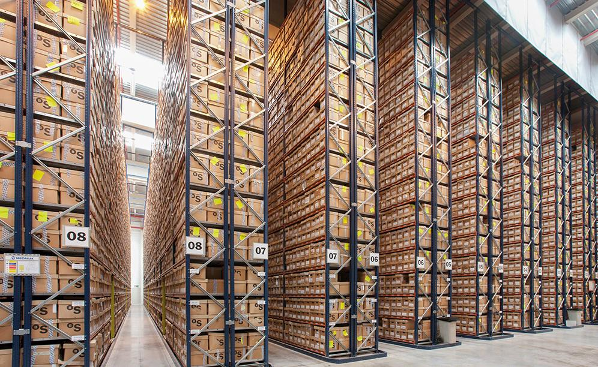

¿Quienes somos?

Somos especialistas en digitalización de todo tipo de documentos en organizaciones tanto estatales como privadas,
posibilitando el acceso a la información de manera simultánea desde cualquier dispositivo electrónico.
posibilitando el acceso a la información de manera simultánea desde cualquier dispositivo electrónico.
¿Cómo es el proceso?
Desde el inicio de cada proyecto nos focalizamos en el ámbito de la gestión documental inteligente, aplicando soluciones innovadoras que posibiliten hacer más eficiente la gestión diaria de las organizaciones.
Para ello contamos con un equipo de trabajo integrado por especialistas altamente calificados en el análisis, diseño e implementación de proyectos de gestión documental.
A continuación mostramos los pasos hacia la transformación digital de su empresa.
Recupero
Clasificación
Digitalización
Almacenamiento
Guarda
Acceso
Disponibilidad
Para ello contamos con un equipo de trabajo integrado por especialistas altamente calificados en el análisis, diseño e implementación de proyectos de gestión documental.
A continuación mostramos los pasos hacia la transformación digital de su empresa.
Recupero
Clasificación
Digitalización
Almacenamiento
Guarda
Acceso
Disponibilidad